AIC
Improving the Homestay Experience
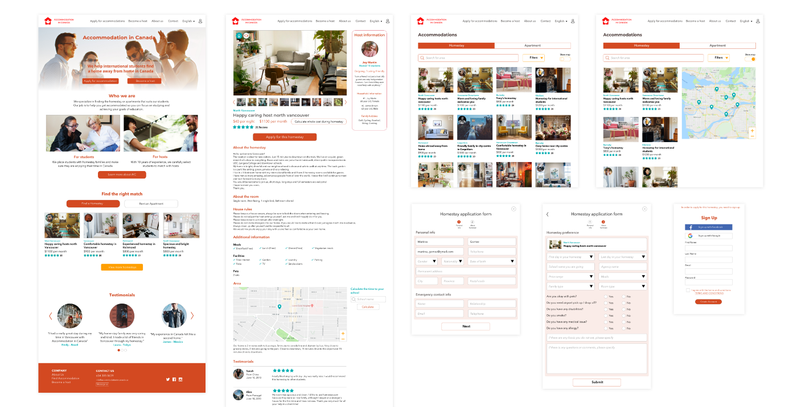
Context
Our client, Accommodation in Canada (AIC) is an agency that has been matching homestay students with accommodation for two years. We were given the project of re-designing the AIC web app to improve the user experience as well as attract more customers to the business and help some of her problems in the matching process.
Canada is a multicultural country where many homestay students go to study or learn a new language. Many international students prefer to live with a homestay which is a family that provides accommodation, meals and cultural exchange.
Staying with a homestay is a fun and unique experience, but finding the right homestay can be a difficult experience.
Process
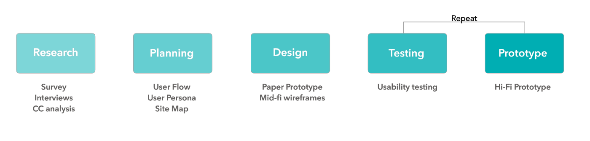
Research
In order to build a customized user experience, we surveyed 23 students and 10 hosts to understand their experience with homestay agencies. The main questions focused on how they found their homestay searching experience.
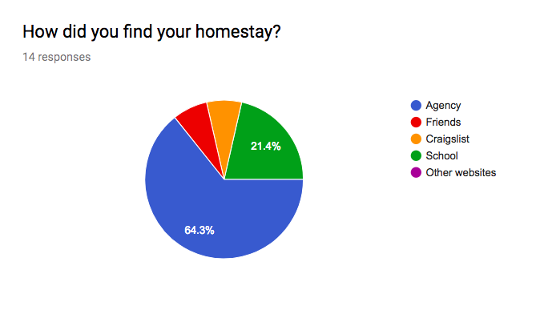
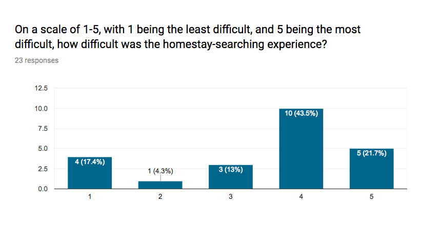
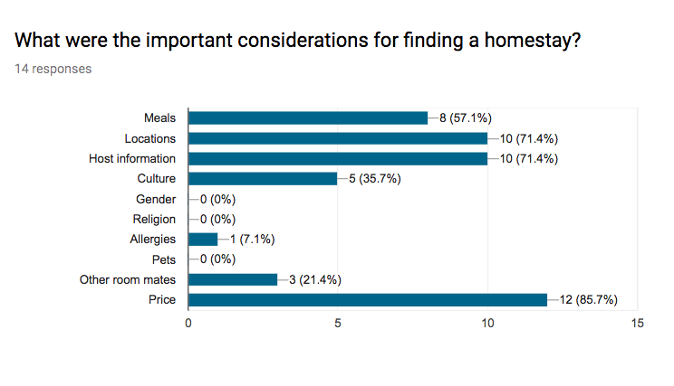
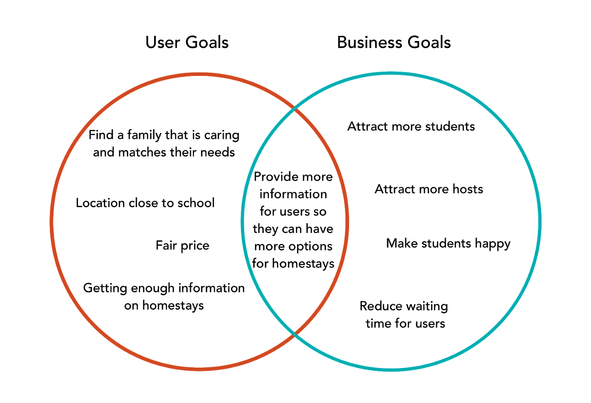
User Journey Map
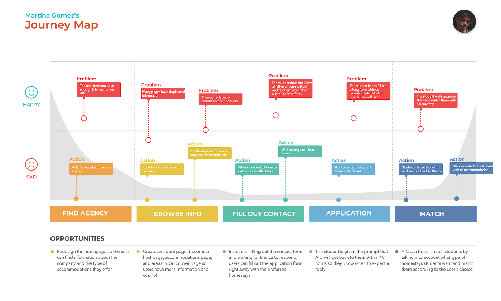
Storyboarding
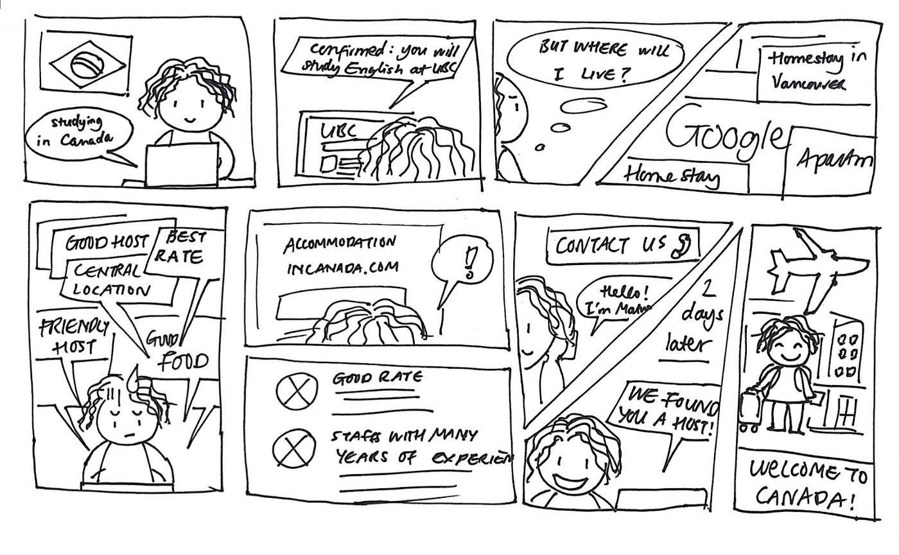
User Personas
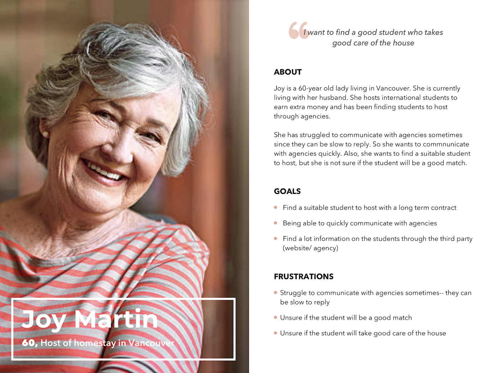
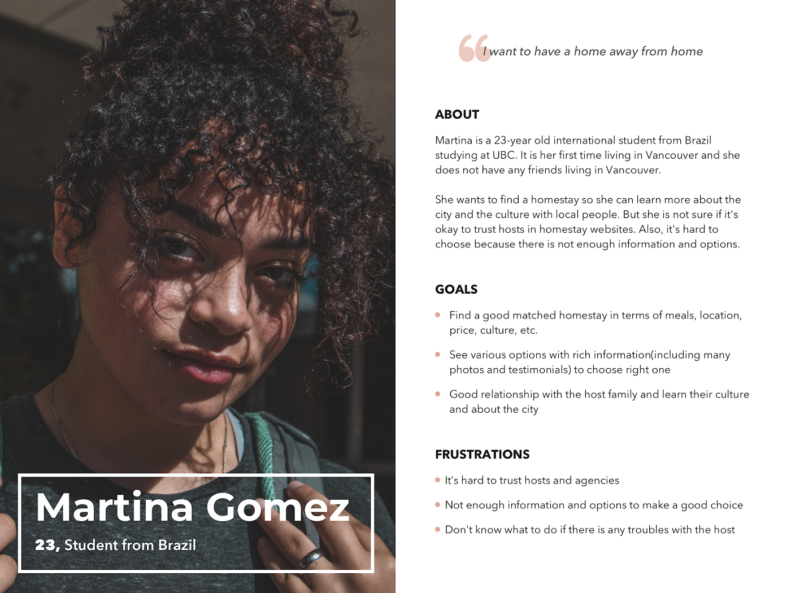
Storyboard

Planning
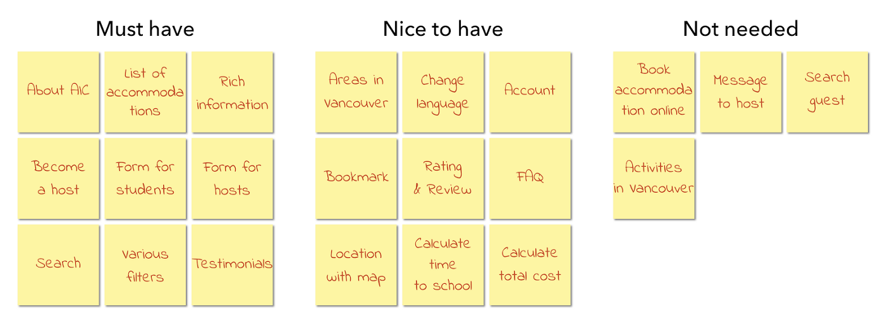
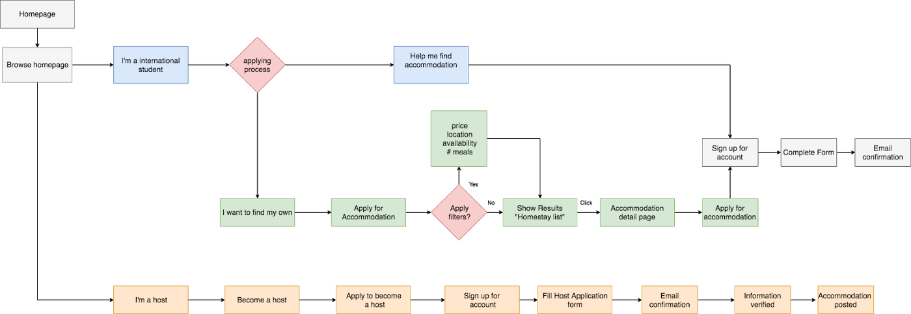
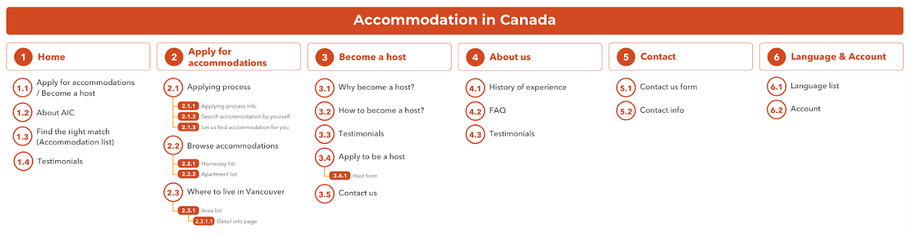
Mid Fidelity Prototypes
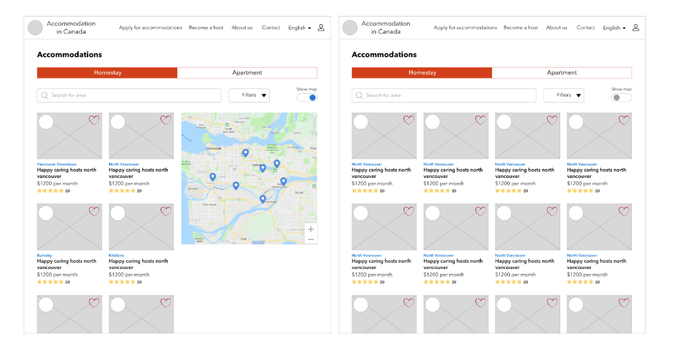
Testing
I tested on five users in low fidelity and five users in mid fidelity and made revisions according to their feedback.
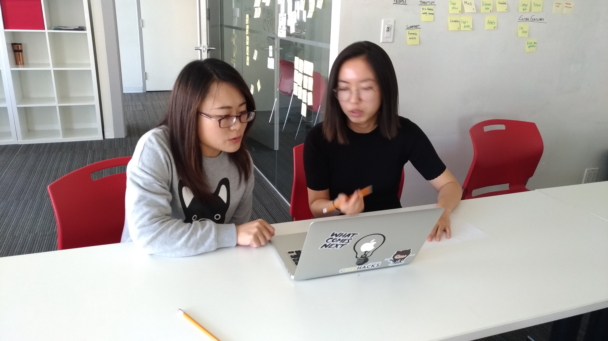
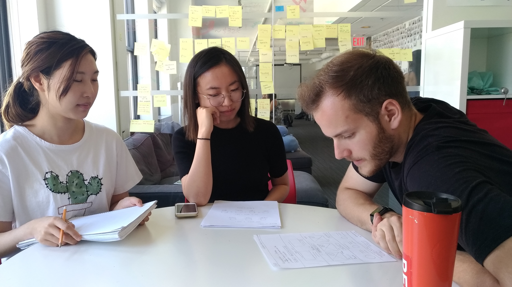
When using filters on the accommodation page, users usually want to use more than one filter. Therefore, we combined the filters into one dropdown menu, where users can select all the filters together.
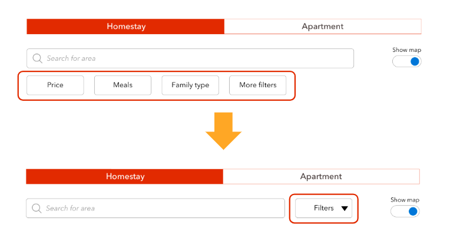
Users also reported that seeing the daily price was not helpful because they usually calculate by month. We changed the price from daily price to monthly price so users can have a smoother experience when picking a homestay.
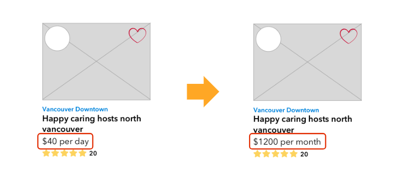
We also changed the favourite button to a bookmark button because some users indicated that the heart button made it seem like they could pick their own homestay. We changed it to a bookmark icon to allow users to know that they have saved their preference to the application.

Key Learnings
Balancing Business and User Goals
Through this project, we were able to find a balance between the user and business goals. Although it was confusing at first to understand the business model, however after doing more research on the market, we were able to get a better understanding of how homestay agencies work. Understanding the business
Although user experience design is about focusing on the users, I learned that understanding the business is as important as understanding the users.
Importance of User interviews
Furthermore, I learned a lot about the users through in-depth interviews. In previous projects, I primarily relied on survey for primary research. However, students we interviewed told us a lot of detailed information that contributed to our design decisions.
Read full case study on medium